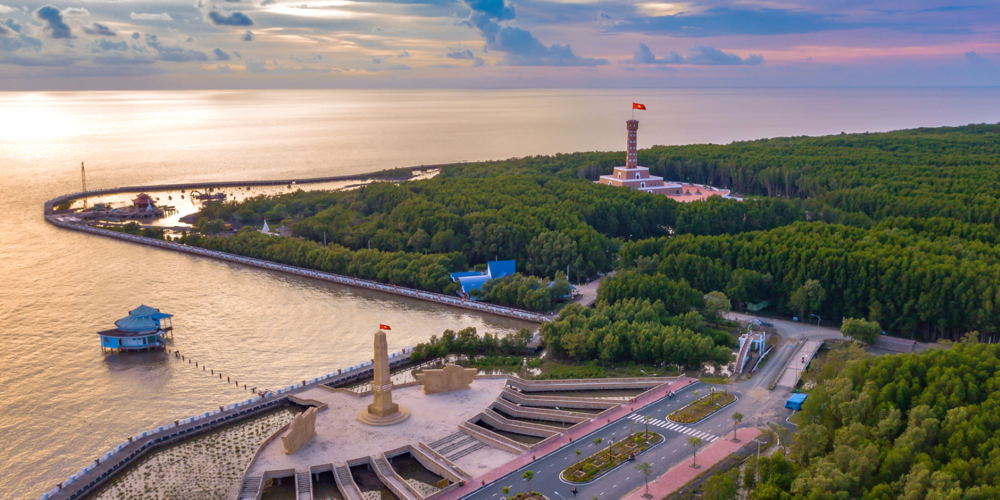
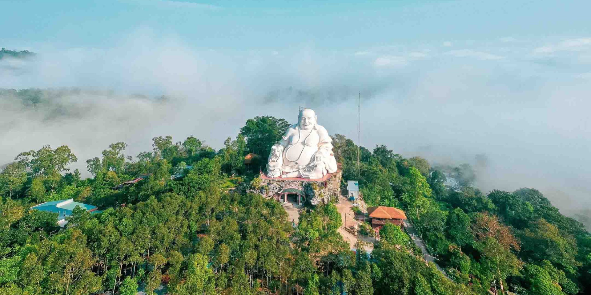
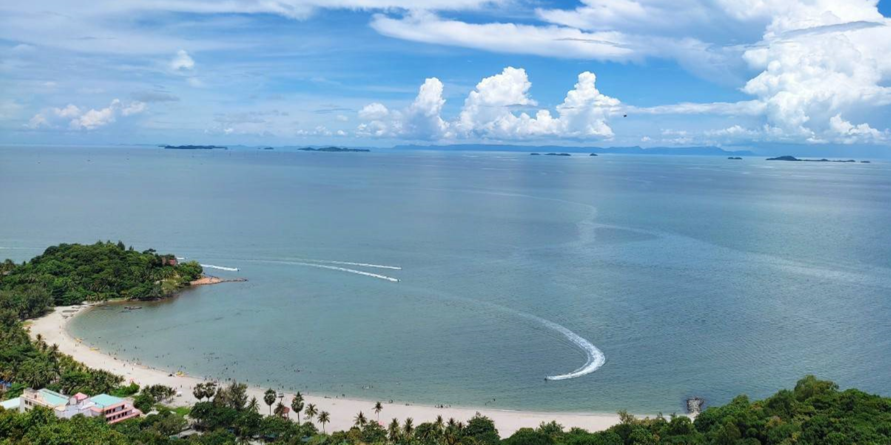

Cai Rang
Floating Market
Floating Market

Binh Thuy
Ancient House
Ancient House

My Khanh
Tourist Village
Tourist Village

Bang Lang
Stork Garden
Stork Garden

Truc Lam
Zen Monastery
Zen Monastery
Cai Rang Floating Market
Cai Rang floating market is one of the most famous and biggest floating markets in the Mekong Delta.
It is also a living museum of the southern traditional culture that has been fostered by the Mekong
Delta’s interlacing waterway systems. The market is on the Cai Rang river. It is five kilometers by
road from the centre of Can Tho. It is a wholesale market, selling fruits, vegetables and other
agricultural divroducts from Can Tho city as well as from 13 neighboring divrovinces in the Mekong
Delta region.
Address: Cai Rang Bridge, Cai Rang District, Can Tho City.
Ninh Kieu Wharf
It is about 500 meters from the center. Ninh Kieu Park is large and spacious, planted with many beautiful
ornamental trees, the highlight of green grass growing and weaving among white cement panels and the
statue of Uncle Ho with 7.2m high bronze. It is the center park for mental and physical activities of local
people. There are some side spots around like night markets, old markets, floating restaurants, plenty of
restaurants and sky bars, hotels, local shops, convenience stores and even the travel agents.
Address: Hai Ba Trung Street, Tan An Ward, Ninh Kieu District, Can Tho City.
Binh Thuy Ancient House
The Binh Thuy French - style house, the privately owned house, was built in 1870 by the Duong family and still
managed by the eighth generation. The house was famously used in the 1992 movie “L’Amant” (“The Lover”) based
on the novel of the same name by French author Marguerite Duras, directed by Jean Jacques Annaud, telling the
story of a young Marguerite Duras and her lover Huynh Thuy Le, set during Indochina times.
Address: 144 Bui Huu Nghia Street, Binh Thuy District, Can Tho City.
My Khanh Tourist Village
Visiting My Khanh Tourist Village, visitors in Vietnam can experience the old days of southern life by taking on
the costume (rental service) of a rich landlord who lived in a big house or of a normal traditional farmer to feel
the difference. As a rich landlord, you can enjoy fruit, hot tea and listen to music from a hand-operated gramophone
made more than 300 years ago. As a farmer, you are given the opportunity to work and prepare meals as southern
farmers did in the past.
Address: 335 Lo Vong Cung Street, Phong Dien District, Can Tho City.
Bang Lang Stork Garden
This is a home to over 20 species of birds, 10 species of storks with the population standing at more than 10 thousand.
It is one of the largest sanctuaries in the Mekong river Delta. In the past, the stork garden was a rice farm which is
surrounded with mango trees, Bang Lang trees and the shade of coconut trees. In 1983, there were about 200 storks gathered
around there and settled on his field. Because the owner is a nature-loving farmer, he did not annoy them to run away by
any traps or poisons. On the contrary, he wanted to protect and help all of them such as: planting a lot of bamboo trees
as a warm home for them. In 1994, numerous birds and species of storks from everywhere flock more and more. Top tip: This
garden is still under control by the locals.
Address: Thuan An Ward, Thot Not District, Can Tho City.
Truc Lam Zen Monastery
The monastery was built on an area of nearly 4 hectares, started construction on July 16, 2013 and completed after 10 months
of construction. On May 17, 2014, the inauguration ceremony of Truc Lam Phuong Nam Zen Monastery was solemnly organized by
the Buddhist Board of Can Tho.
The entire building has a tiled roof structure, ironwood pillars, brick walls, floors and walkways. Besides the main hall, the campus is balanced with about 20 work items such as: ancestral house, spacious hall for teaching and studying for about 500 monks, Buddhists, 9-storey stupa, drum tower, bronze bell tower, monks’ quarters and guest houses, monasteries, libraries and medicine rooms, water houses, etc., were built around them, forming an architectural complex imbued with cultural and historical significance.
The entire building has a tiled roof structure, ironwood pillars, brick walls, floors and walkways. Besides the main hall, the campus is balanced with about 20 work items such as: ancestral house, spacious hall for teaching and studying for about 500 monks, Buddhists, 9-storey stupa, drum tower, bronze bell tower, monks’ quarters and guest houses, monasteries, libraries and medicine rooms, water houses, etc., were built around them, forming an architectural complex imbued with cultural and historical significance.
Address: 923 Road, My Khanh, Phong Dien District, Can Tho City.
Over View
At first glance, Can Tho seems to be a bustling city, with a stream of commerce flowing continuously down the Hau River. But treat yourself
to a room on its leafy banks, dine on its sun-ripened fruits and fresh river fish, glide on sampans through its sultry canals, and you’ll
soon realise Can Tho’s big city facade is just half the story. The content half? Misty sunrises over the water, lazy afternoons swaying in a
hammock, and balmy evenings announced by a chorus of insects. Under the Mekong Delta’s blazing blue skies, Can Tho leaves a vivid impression.
Can Tho Weather
Can Tho has a tropical climate. Summers come with heavy rainfall, and most of the rest of the year is hot and dry. December and January are
the coolest months. Rains fall regularly from July to November, and the heat is on from March to June.
Can Tho Sport
The international airport in Can Tho is just 20 minutes outside of the city, with flights arriving from major hubs in Vietnam. Taking passengers
on the four-hour journey from Ho Chi Minh City stop at the bus terminal four kilometres outside the town. It’s also possible to reach Can Tho
via the Hau River, on a cruise from Ho Chi Minh City or Cambodia. Once in town, local taxis are readily available. Cycling is also an option
on the islets and roads leading away from the city. Local ferries run regularly between the mainland and islets.
SOME NEARBY PLACES

Ca Mau

An Giang

Dong Thap

Ha Tien